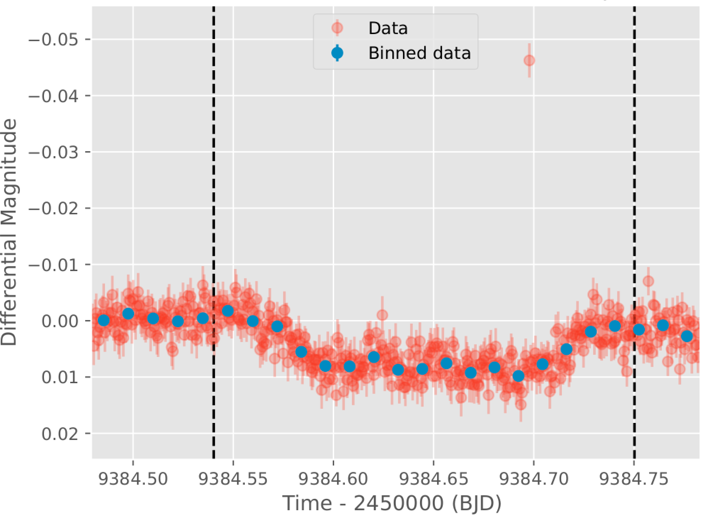
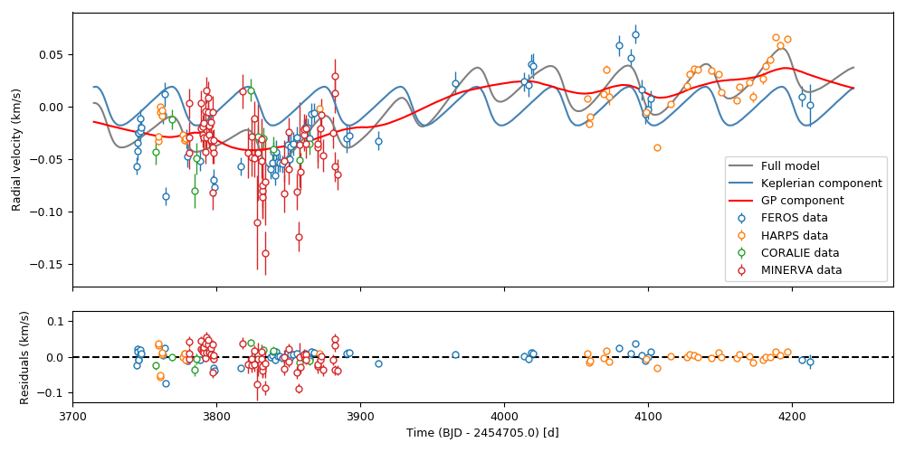
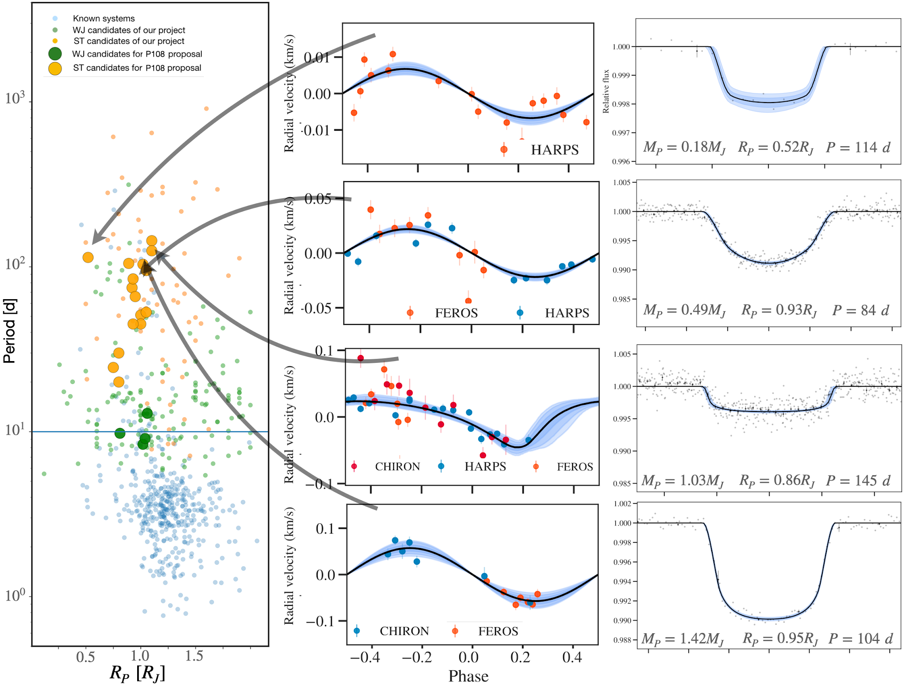
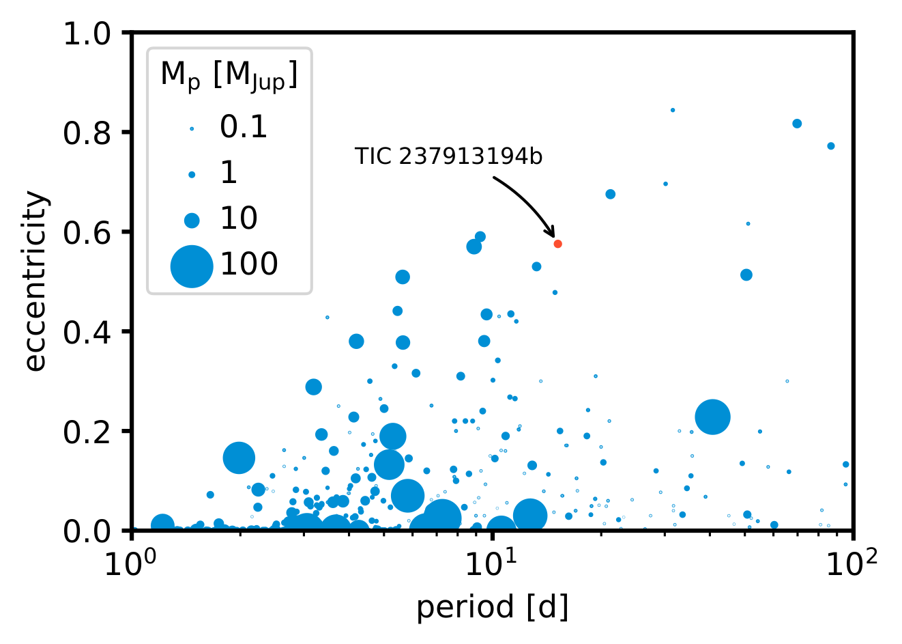

The WINE collaboration:
Unveiling long-period planets with TESS
Rafael Brahm1,3, Nestor Espinoza4, Thomas Henning5, Melissa J. Hobson 1,2, Andres Jordán1,3, Diana Kossakowski5, Felipe Rojas1,2, Paula Sarkis5, Martin Schlecker5, Marcelo Tala1,3, Trifon Trifonov5
1,2, Andres Jordán1,3, Diana Kossakowski5, Felipe Rojas1,2, Paula Sarkis5, Martin Schlecker5, Marcelo Tala1,3, Trifon Trifonov5
1. Millennium Institute for Astrophysics, Chile; 2. Instituto de Astrofísica, Pontificia Universidad Católica de Chile; 3. Facultad de Ingeniería y Ciencias, Universidad Adolfo Ibáñez, Chile; 4. Space Telescope Science Institute, USA; 5. Max-Planck-Institut für Astronomie, Heidelberg, Germany
Photometric follow-up

Click to learn more about our photometric follow-up!
Radial velocity follow-up

Click to learn more about our radial velocity follow-up!
Giant, long-period exoplanets are vital to unveiling the underlying physics of planet formation and evolution. They are true relics of the planet formation process, maintaining their orbital and compositional properties, and their radii evolve without external irradiation, providing rich and unique data for planet evolution models.
We present the Warm gIaNts with tEss collaboration (WINE), which is at the forefront of detecting, confirming, and characterizing transiting long-period giant exoplanets from TESS. Our systematic search has given rise to hundreds of transiting giant candidates with periods of 10 to hundreds of days, which is considerably enhancing and complementing the scientific output of the TESS mission.
We introduce our efficient ground-based photometric and radial-velocity follow-up, which has helped confirm several tens of these candidates, including some of the most eccentric transiting long-period planets discovered to date, which are excellent candidates for future characterization studies.
Transiting giant candidates

Click to learn more about the search for new candidates!
An eccentric warm Jupiter

Click to learn more about this planet!
References